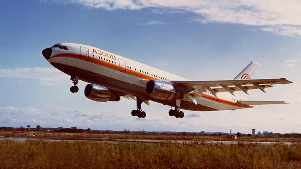

What about the Aviation?

While the Space Race captured headlines, a quieter rivalry was unfolding much closer to the ground — in commercial aviation. For much of the 20th century, the skies were dominated by two American giants: Boeing and McDonnell Douglas.
Europe wasn't ready to concede the market. Britain and France tried to establish their own presence with the Concorde, the first supersonic airliner — but it struggled commercially and was eventually retired, while Boeing pressed ahead with its 747 "jumbo jet" family.
Around this time, Germany, France, and Britain grew concerned that the US was heading toward a monopoly in commercial aviation. In May 1967, ministers from these countries met and set in motion the first A300 family of Airbus aircraft, with an ambitious goal: build a 300-passenger airliner that could actually compete in the market. Rolls-Royce, initially responsible for the engines, withdrew soon after as costs mounted.
Without an engine of their own, Airbus couldn't build the 300-seat jet they had planned. So their technical director pivoted, developing a smaller, 250-seat aircraft — the A300B — powered by the already-proven American GE CF6-50A engine, secured through a deal with the French company SNECMA. The result was genuinely revolutionary: a twin-engine jet, lighter and smaller than its rivals, that reached cruising altitude faster and burned less fuel than the three-engine American aircraft it competed against.
The A300B2 and B4 variants followed, and Korean Air became Airbus's first customer outside Europe. Soon after, the smaller A310 launched with initial orders from Swiss Air and Lufthansa. Britain rejoined the program with a £50 million loan toward development, and British Aerospace was granted a 20% stake in Airbus — with France and Germany's shares reduced to 37.9% each, and the remainder held by Spain.
Here's how the A310 stacked up against its closest rival at the time:
| Aircraft | Total Capacity | Top Speed | Range | Length |
|---|---|---|---|---|
| Airbus A310 | 218 | 560 mph | 5,000 mi | 154 ft (47 m) |
| Boeing 737 MAX | 230 | 521 mph | 3,300 mi | 116 ft 8 in (35.56 m) |
Despite carrying fewer passengers, the A310 could fly 1,700 miles farther than the 737 MAX — and it wasn't even close for the original 737. Airbus got there through genuine innovation: carbon-fibre-reinforced plastic on secondary structures like air brakes, spoilers, and rudders; drag-reducing wingtip devices for better fuel efficiency; and a cockpit built around six CRT displays with integrated monitoring and warning systems, replacing the analog gauges of earlier aircraft — a design that would later evolve into the ECAM systems found in modern cockpits.
That leap forward pushed Boeing to respond with its own twin-engine airliner, the 767 — and so began the rivalry between Boeing and Airbus that continues to this day.